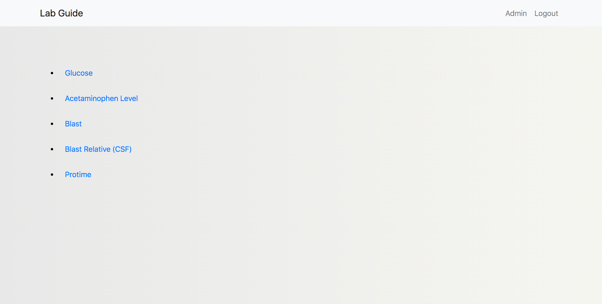
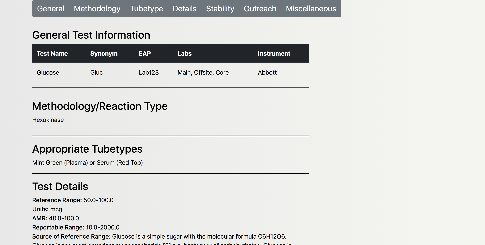

Laboratory Testing Catalog
Laboratory Test Catalog allows for quick access to important testing information. With laboratories offering a wide range of tests, having all the vital testing information is crucial. Tests can be searched by the test name directly such as "Glucose" or by the test code/synonym, in this example "Gluc". Laboratory Test Catalog was built using the Django Framework.
 This test catalog was built with simplicity in mind. When a search returns one entry, that information will be displayed directly. If a search query contains tests with similar names, all tests with the common name will be displayed in a list; allowing the user to choose the test they need. An adminstration page is provided to add and update testing information.
View CodeBack To Homepage